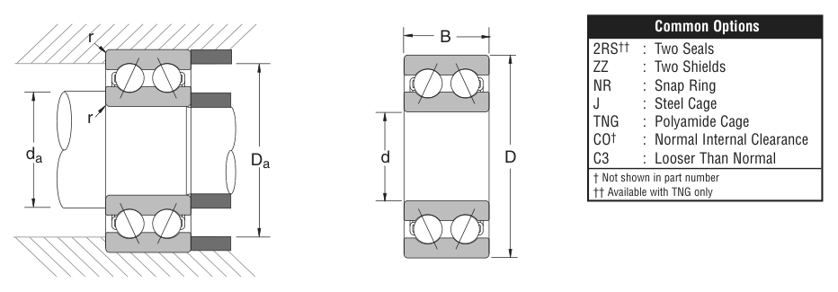

Original catalogue drawing - NSK catalogue, page 33

Scanned from the manufacturer catalogue page listing this part number. All part numbers printed on that table share the same drawing.
Scale cross-section
Blue = inner / outer ring, yellow = rolling element. Drawn to scale from this part's own
dimensions for selection reference only - not a manufacturing or assembly drawing.
Dimension table (mm / inch)
Symbol
Dimension
mm
inch
d
Bore diameter
35
1.378
D
Outside diameter
72
2.8346
B
Inner-ring / bearing width
27
1.063
r
Chamfer (min)
0.991
0.039
Notes
Weights are given in kg. Load ratings are shown in both the original catalogue units and the converted value (1 N = 0.2248 lbf). Data is provided for selection reference only - confirm against the latest official catalogue before ordering.
Main dimensions
Bore d (mm)
35
Bore d (in)
1.3780
Outside dia. D (mm)
72
Outside dia. D (in)
2.8346
Width B (mm)
27.0
Width B (in)
1.0630
Load ratings & speeds
Basic dynamic load rating Cr (lbs)
8770
Basic static load rating Cor (lbs)
5620
Limiting speed - grease (rpm)
5,600
Limiting speed - oil (rpm)
7,100
Weight
Weight (kg)
0.413
Mounting dimensions (fillets / shoulders)
Chamfer r (in)
0.039
Shaft shoulder da min (in)
1.638
Housing shoulder Da max (in)
2.559
Bearing life (ISO 281 basic rating life)
C / P
Equivalent load P (N)
L10 (106 rev)
L10h at 1,800 rpm
4
9,753
64
593
6
6,502
216
2,000
8
4,876
512
4,741
10
3,901
1,000
9,259
15
2,601
3,375
31,250
Basic rating life per ISO 281: L10 = (C/P)3 with C = 39,011 N. Hours = L10 x 106 / (60n). Life-modification factors for lubrication, contamination and temperature (aISO) are not included.
Source & traceability
Brand
NSK
Source catalogue
NSK inch product catalogue
Catalogue page
p.35 (dimensions) / p.36 (ratings)
Dimensions in inches and millimetres, load ratings in lbs.
Send us the quantity you need and we will come back with price and
lead time, normally within 24 hours. Equivalent parts from other brands can be quoted at the same time.